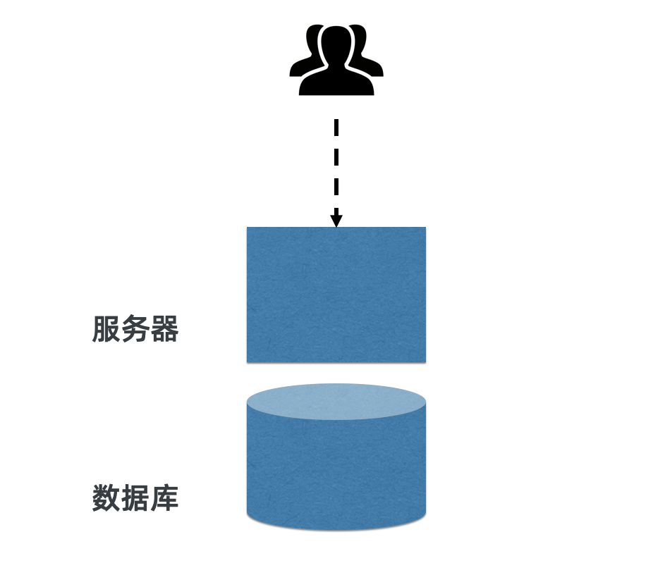
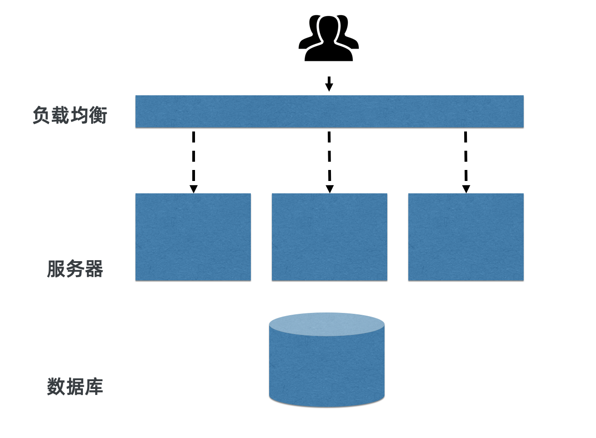
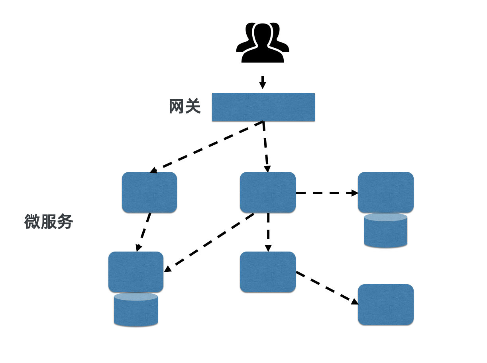

- 01 架构的演进.md
- 02 Serverless 的价值.md
- 03 常见 Serverless 架构模式.md
- 04 Serverless 技术选型.md
- 05 函数计算简介.md
- 06 函数计算是如何工作的？.md
- 07 函数粘合云服务提供端到端解决方案.md
- 08 函数计算的开发与配置.md
- 09 函数的调试与部署.md
- 10 自动化 CI&CD 与灰度发布.md
- 11 函数计算的可观测性.md
- 12 典型案例 1：函数计算在音视频场景实践.md
- 13 典型案例 3：十分钟搭建弹性可扩展的 Web API.md
- 14 Serverless Kubernetes 容器服务介绍.md
- 15 Serverless Kubernetes 应用部署及扩缩容.md
- 16 使用 Spot 低成本运行 Job 任务.md
- 17 低成本运行 Spark 数据计算.md
- 18 GPU 机器学习开箱即用.md
- 19 基于 Knative 低成本部署在线应用，灵活自动伸缩.md
- 20 快速构建 JenkinsGitlab 持续集成环境.md
- 21 在线应用的 Serverless 实践.md
- 22 通过 IDEMaven 部署 Serverless 应用实践.md
- 23 企业级 CICD 工具部署 Serverless 应用的落地实践.md
- 24 Serverless 应用如何管理日志&持久化数据.md
- 25 Serverless 应用引擎产品的流量负载均衡和路由策略配置实践.md
- 26 Spring CloudDubbo 应用无缝迁移到 Serverless 架构.md
- 27 SAE 应用分批发布与无损下线的最佳实践.md
- 28 如何通过压测工具+ SAE 弹性能力轻松应对大促.md
- 29 SAE 极致应用部署效率.md
01 架构的演进
传统单体应用架构
十多年前主流的应用架构都是单体应用，部署形式就是一台服务器加一个数据库，在这种架构下，运维人员会小心翼翼地维护这台服务器，以保证服务的可用性。

▲ 单体架构单体应用架构面临的问题
随着业务的增长，这种最简单的单体应用架构很快就面临两个问题。首先，这里只有一台服务器，如果这台服务器出现故障，例如硬件损坏，那么整个服务就会不可用；其次，业务量变大之后，一台服务器的资源很快会无法承载所有流量。
解决这两个问题最直接的方法就是在流量入口加一个负载均衡器，使单体应用同时部署到多台服务器上，这样服务器的单点问题就解决了，与此同时，这个单体应用也具备了水平伸缩的能力。

▲ 单体架构（水平伸缩）微服务架构
1. 微服务架构演进出通用服务
随着业务的进一步增长，更多的研发人员加入到团队中，共同在单体应用上开发特性。由于单体应用内的代码没有明确的物理边界，大家很快就会遇到各种冲突，需要人工协调，以及大量的 conflict merge 操作，研发效率直线下降。
因此大家开始把单体应用拆分成一个个可以独立开发、独立测试、独立部署的微服务应用，服务和服务之间通过 API 通讯，如 HTTP、GRPC 或者 DUBBO。基于领域驱动设计中 Bounded Context 拆分的微服务架构能够大幅提升中大型团队的研发效率。
2. 微服务架构给运维带来挑战
应用从单体架构演进到微服务架构，从物理的角度看，分布式就成了默认选项，这时应用架构师就不得不面对分布式带来的新挑战。在这个过程中，大家都会开始使用一些分布式服务和框架，例如缓存服务 Redis，配置服务 ACM，状态协调服务 ZooKeeper，消息服务 Kafka，还有通讯框架如 GRPC 或者 DUBBO，以及分布式追踪系统等。
除分布式环境带来的挑战之外，微服务架构给运维也带来新挑战。研发人员原来只需要运维一个应用，现在可能需要运维十个甚至更多的应用，这意味着安全 patch 升级、容量评估、故障诊断等事务的工作量呈现成倍增长，这时，应用分发标准、生命周期标准、观测标准、自动化弹性等能力的重要性也更加凸显。

▲ 微服务架构云原生
1. 基于云产品架构
一个架构是否是云原生，就看这个架构是否是长在云上的，这是对“云原生”的简单理解。这个“长在云上”不是简单地说用云的 IaaS 层服务，比如简单的 ECS、OSS 这些基本的计算存储；而是应该理解成有没有使用云上的分布式服务，比如 Redis、Kafka 等，这些才是直接影响到业务架构的服务。微服务架构下，分布式服务是必要的，原来大家都是自己研发这样的服务，或者基于开源版本自己运维这样的服务。而到了云原生时代，业务则可以直接使用云服务。
另外两个不得不提的技术就是 Docker 和 Kubenetes，其中，前者标准化了应用分发的标准，不论是 Spring Boot 写的应用，还是 NodeJS 写的应用，都以镜像的方式分发；而后者在前者的技术上又定义了应用生命周期的标准，一个应用从启动到上线，到健康检查，再到下线，都有了统一的标准。
2. 应用生命周期托管
有了应用分发的标准和生命周期的标准，云就能提供标准化的应用托管服务。包括应用的版本管理、发布、上线后的观测、自愈等。例如对于无状态的应用来说，一个底层物理节点的故障根本不会影响到研发，因为应用托管服务基于标准化应用生命周期可以自动完成腾挪工作，在故障物理节点上将应用的容器下线，在新的物理节点上启动同等数量的应用容器。可以看出，云原生进一步释放了价值红利。
在此基础上，由于应用托管服务能够感知到应用运行期的数据，例如业务流量的并发、cpu load、内存占用等，业务就可以配置基于这些指标的伸缩规则，再由平台执行这些规则，根据业务流量的实际情况增加或者减少容器数量，这就是最基本的 auto scaling——自动伸缩。这能够帮助用户避免在业务低峰期限制资源，节省成本，提升运维效率。
本文总结
在架构的演进过程中，研发运维人员逐渐把关注点从机器上移走，希望更多地由平台系统管理机器，而不是由人去管理，这就是一个对 Serverless 的朴素理解。
作者简介
许晓斌，阿里云高级技术专家。目前负责阿里集团 Serverless 研发运维平台建设，在这之前负责 AliExpress 微服务架构、Spring Boot 框架、研发效率提升工作。《 Maven 实战》作者，曾经是 Maven 中央仓库的维护者。
© 2019 - 2023 Liangliang Lee. Powered by gin and hexo-theme-book.